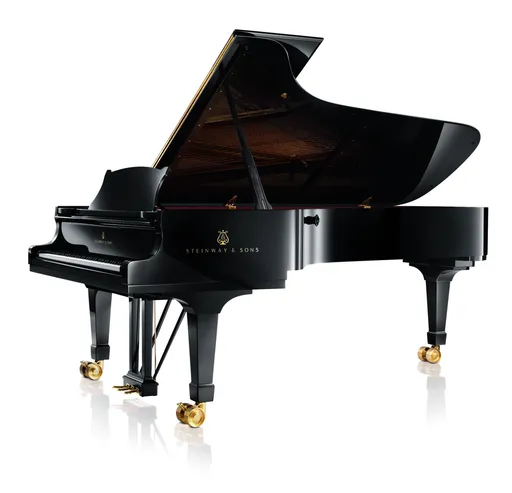
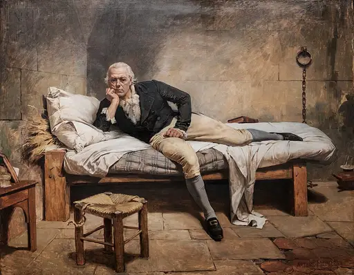
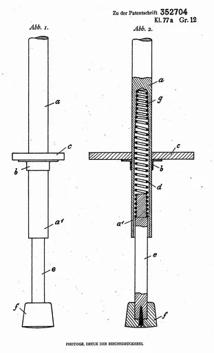
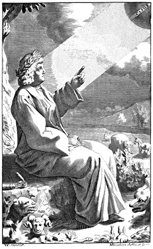

Reject an image by adding its slug to public/charades/charades-easy/reject.txt (append ! to keep it word-only), then re-run node scripts/genimages.mjs.
Parachute parachute Public domain · Air Force photo by Senior Airman Joe Laws, taken from en:wp, uploaded by Dorbie · sourcePhone call phone-call Public domain · http://www.state.gov · source

Piano piano CC BY-SA 3.0 · Steinway & Sons, 10 Rondenbarg, Hamburg D-22525, Germany, eu.steinway.com.Steinway & Sons, 1 Steinway Place, Long Island City, New York 11105, The United States, www.steinway.com. · source

Pillow pillow Public domain · Arturo Michelena · sourcePizza pizza CC BY-SA 4.0 · Petar Milošević · source

Pogo stick pogo-stick Public domain · Inventors of the pogo stick (Ernst Gottschall and Max Pohlig) · source

Pointing pointing Public domain · Designed by “T. C.” (possibly Thomas Creech, died 1700); drawn and engraved by M. Burghers · source